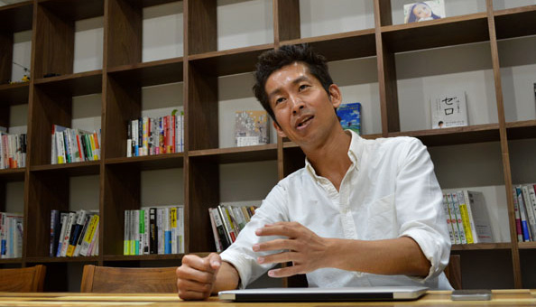
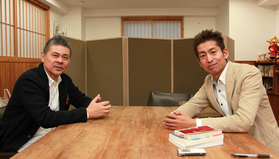
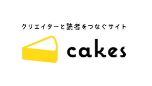
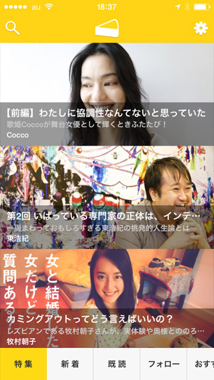
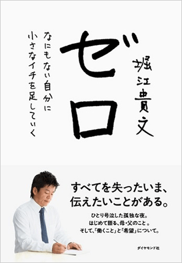

デジタルコンテンツ業界の注目起業がオフショア開発を選んだ理由とは？
ピースオブケイクが切り開くコンテンツの未来
株式会社ピースオブケイク・CEO加藤氏、CTO原永氏インタビュー

加藤：cakesは、いろんな種類のおもしろい人達がでているというのが最大の特徴だと思うんですけど、６〜７割のコンテンツを我々自身が編集してつくっていて、プラットフォームでもあるので、他社がつくっているコンテンツも掲載されています。一部は無料で読むことができます。
コンテンツの長さや読みやすさなど、いろんなものをネットに最適化した形で作ってあるので、特にスマートフォンやタブレットで読みやすくなっています。ひとつの記事を３分以内で読めるようにしているんですよ。隙間時間にどんどん読めるように、ユーザーインターフェイスも工夫しています。短い記事を読みながら、次々めくっていくことで長いものも読める。ネットのコンテンツというのは、バラバラで連続性がなくなってしまいがちです。流通のしやすさという点では、いいところでもあるのですが、継続的なコンテンツが見にくいというのは、ネットの弱点だと思っています。そこをユーザーインターフェイスで克服するということを課題にしています。
最近人気がある記事は、ドワンゴの川上会長のインタビューです。あとcakesをはじめてからの一番のトピックとして、ここから本が出てベストセラーが生まれているということだと思うんですよね。ここで連載をして30万部を超えたものがすでに３冊あります。堀江貴文さんの『ゼロ』、岸見一郎さんと古賀史健さんによる『嫌われる勇気』それと西内啓さんの『統計学が最強の学問である』です。これは、最初から編集担当と出版社で連携をして、出版することを前提に作ったコンテンツです。『ゼロ』は、僕自身も編集をしました。
今までは雑誌に連載していたものを本にするというのはよくありました。しかし、今、雑誌が苦境にあるので、その部分をウェブで肩代わりしようとはじめたものです。ウェブでクリエイティブとマーケティングをやって、最後にまた本にしてお金を儲けるという、そういうスタイルを出版社に提案しています。現状はまだ、著者さんからすると紙の本のほうが儲かっているので、そこをやっています。また、cakesで連載したコンテンツを本にしたいという相談や、版元からも掲載媒体として使いたいという問い合わせも多く受けます。
加藤：実は…メディアとしてのコンセプトはあんまりないんです。cakesをはじめるときにすごいたくさんの著者さんに会いまくったわけなんですけど、必ず「雑誌としてコンセプトはなんなのか」聞かれました。cakesは、雑誌ではなくプラットフォームなので、コンセプトを強く打ち出すのはふさわしくないのではないかと思っていて、「ないんです」と答えると、「えぇっ？」って驚かれることもあります。
ただ、「やらないこと」は決めているんですよ。たとえば、ネガティブなことはしません。インターネットってネガティブなことで溢れているでしょ。悪口とか意味のない批判とか。批評ならいいんですけど、境目は難しいんですね。cakesは、基本的に、ポジティブなことだけをする場所にしようと思っています。お金をいただいて読むものなので、読んだあとにいい気持ちになってもらうことがすごく重要だと思っていて、ネガティブなことはしないことに決めています。プラットフォームとして乗っかってきている人にも、そこだけは話をしています。

「ネガティブなことはしないことに決めています。」と語る加藤氏。
加藤：そうですね…、個人的に感慨深かったことは cakesをはじめて１年経ったところで糸井重里さんにロングインタビューをさせていただいたことですね。cakesをはじめるときに、どんなコンテンツがあればいいのかというのを考えていて、その連載にも書いたんですけど、インタビューがあるといいなとか、ネットだから新しいものを紹介しようとか。今雑誌があれだけ弱まっているから、エッセイの面白い新人がでてきていないんですよね。じゃあエッセイはやろうとか。コンテンツによっては毎日更新したいから、女の子の写真をやろうかとか。やろうってことを並べていくこと、これ「ほぼ日」に似てるなと思い、じゃあ何をしたら僕たちなりの新規性が出せるんだろうという壁に最初にぶち当たったんですよね。僕自身は糸井さんみたいな有名人でもないので、どうしたらいいのか、ってことを最初から考えていました。それは、いまでも考えているんですけど、１周年を迎えるにあたり糸井さんに話を聞きにいきたいなと思って、がんばって手紙を書いて連絡差し上げたら、「どうぞ、どうぞ」と快諾いただいたんです。
加藤：なかったんですよ、はじめてでした。感動的な出来事でした。
加藤：僕と同じ歳（1973年生まれ）の古賀さんというライターといっしょに行ったんですけど、糸井さんは僕らにとってスターのような存在なので、「スターに会えた！」と興奮しました。あと内容が「糸井さんぜんぶ聞いてもいいですか？」というタイトルなんですけど、本当に僕が、根堀り葉堀り聞くんですよね。１年間cakesをやって苦労してきたこと悩んでいることを悩み相談のように聞きまくるんです。それに対して、すごく真摯に答えてくださって、とても感謝しています。終わったあとに古賀さんとふたりで脱力したんですけど、あんなに素晴らしい方がこんなに時間をさいてくれて、しかも本気で答えてくれたということが一番嬉しかったことですね。

全13回の連載 糸井さん、ぜんぶ聞いてもいいですか？より
加藤：あんまりないですね。僕らはけっこう新しいことをやっているので、そういうのはないんですよ。新しいやり方を発明する必要があるという思いでやっています。

cakesは今まで２年弱で、328人のクリエーターが登場し、小説、インタビュー、写真、漫画、エッセイ、評論など5000を超えるコンテンツが掲載されている。課金制となっていて、週150円、月500円の継続課金で読むことができ、読まれた量に応じてクリエイターにお金が分配される仕組みになっている。

ひとつの記事を３分以内で読めるように最適化されているcakesのスマートフォンアプリ

30万部を超えるヒットとなった堀江貴文さんの「ゼロ」
ベトナムのオフショア開発の視察、システム開発に関するご質問、
お仕事のご相談、お見積の依頼など、お気軽にお問い合わせください。